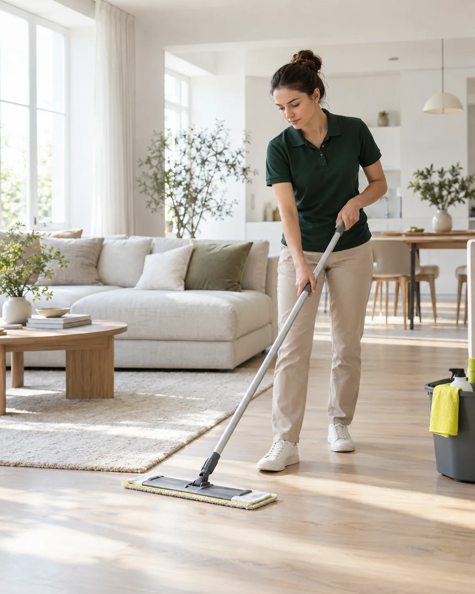
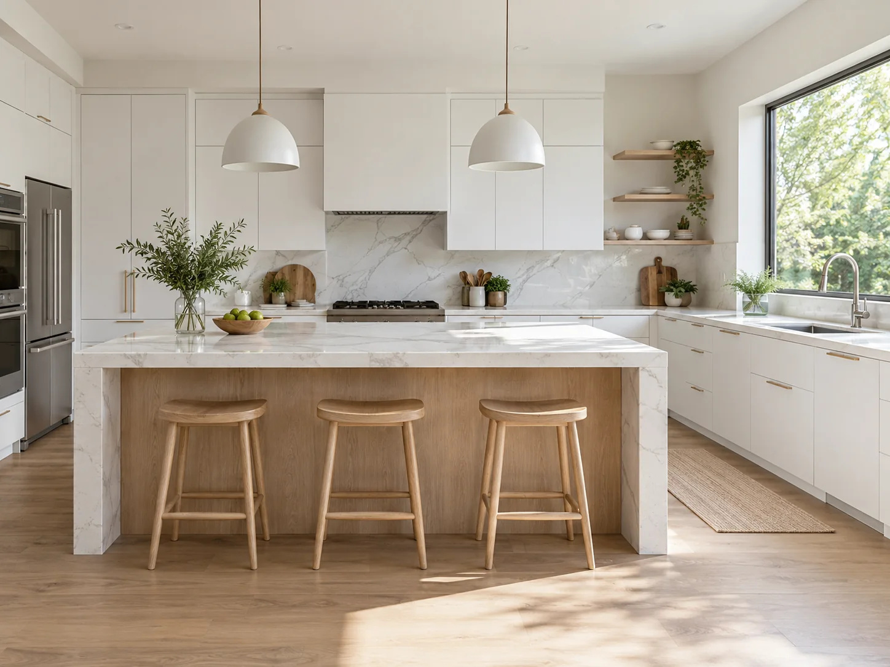
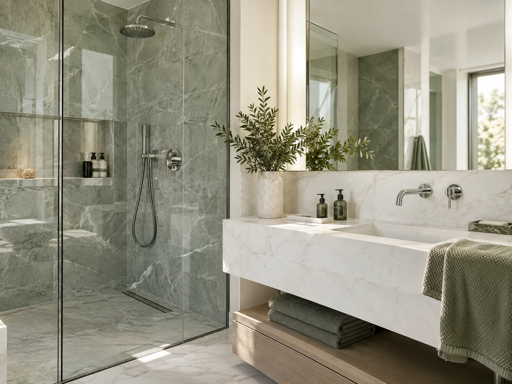
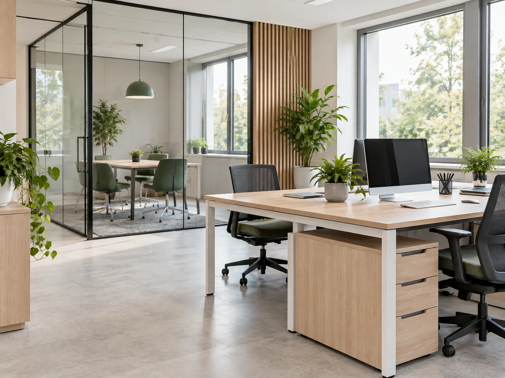
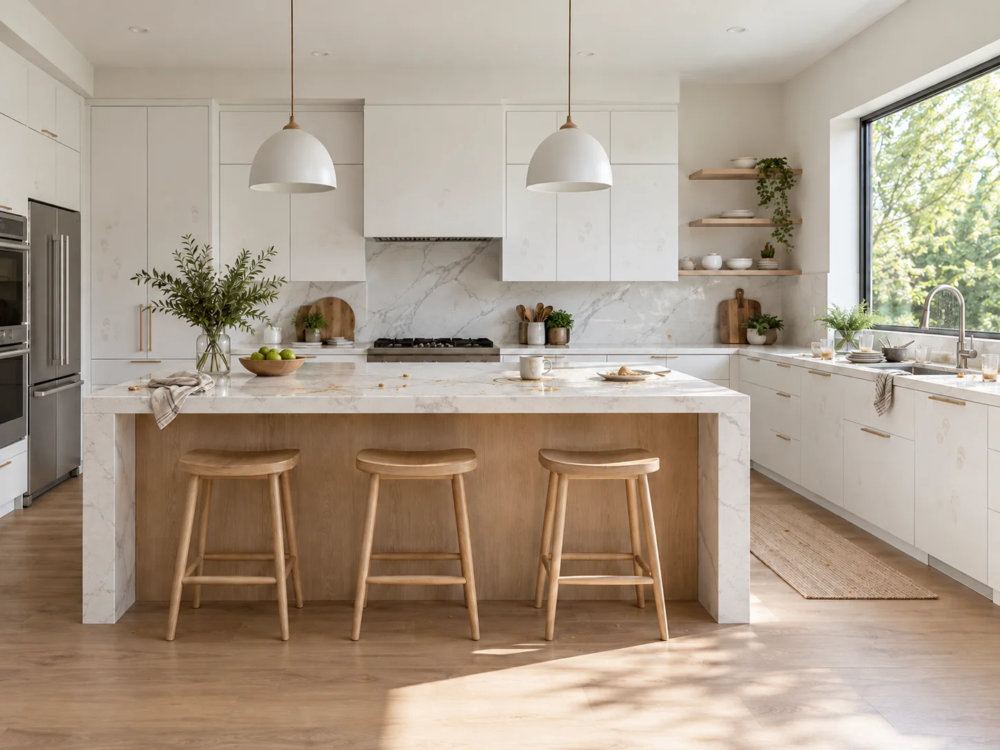
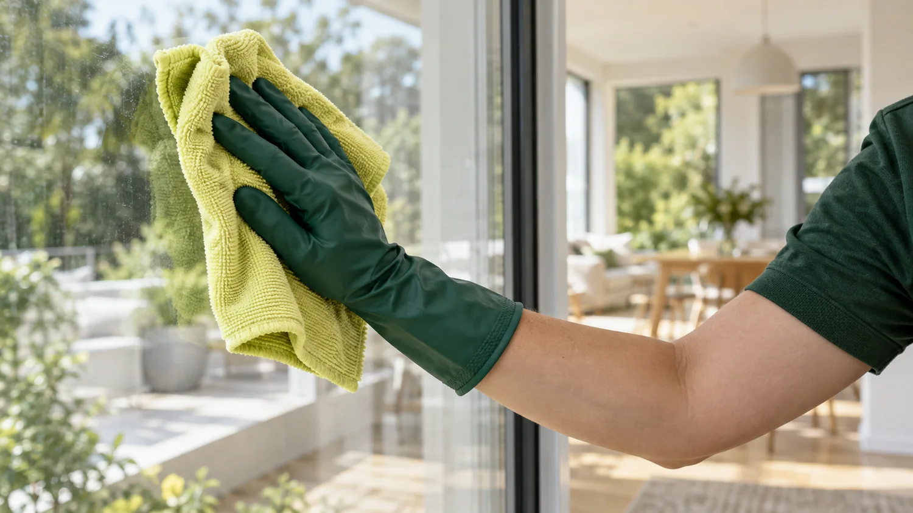

Поддерживающая
Полы, пыль и поверхности
Для регулярного ухода за домом
Что входит
- Доступные поверхности
- Пылесос и влажная уборка пола
- Кухня и санузел
- Вынос бытового мусора
Уборка квартир и офисов в Екатеринбурге
Пока мы наводим порядок,
вы занимаетесь своим
Средства и инвентарь привезём с собой
Объём работ согласуем заранее

Для обычного дня, большого наведения порядка
или первого вечера после ремонта
Полы, пыль и поверхности
Для регулярного ухода за домом

Подробная уборка каждой комнаты
Когда накопилось больше обычного

Строительная пыль и следы работ
Перед переездом в готовый дом

Рабочие места и общие зоны
К следующему рабочему дню
Следы на фасадах, разводы и крошки
Посмотрите на кухню до и после уборки

ДоПослеПример генеральной уборки кухниВизуализация для концепта
Площадь, вид уборки и дополнительные задачи
Расчёт обновляется сразу
Укажите целую площадь от 30 до 300 м²

Микрофибру, средства для разных поверхностей и оборудование. Перед уборкой уточним, с какими материалами предстоит работать.
Площадь, тип уборки, дополнительные работы и удобное время
Начнём с комнат, затем перейдём к кухне и санузлу
Пройдёмся по помещениям вместе и проверим согласованный список
Ответы на вопросы,
которые помогут подготовиться
Достаточно встретить команду, обсудить задачу и обеспечить доступ. Вариант передачи ключей согласуется отдельно.
Личные вещи, документы и хрупкие предметы лучше убрать заранее. Свободные поверхности проще обработать полностью.
Окна рассчитываются отдельно. Добавьте их в калькулятор и укажите количество. Нестандартные размеры обсуждаются до выезда.
Предупредите о животных заранее. На время работ лучше обеспечить им отдельное спокойное место.
Да, такую задачу можно описать в пожеланиях. Для небольших объектов действует минимальная стоимость выезда.
Екатеринбург
Выбранный расчёт уже здесь
Останется уточнить детали уборки
Это концепт компании для портфолио
Заявки не отправляются в реальную службу
Проверьте выбранную уборку и контакт
Заявка никуда не отправлена